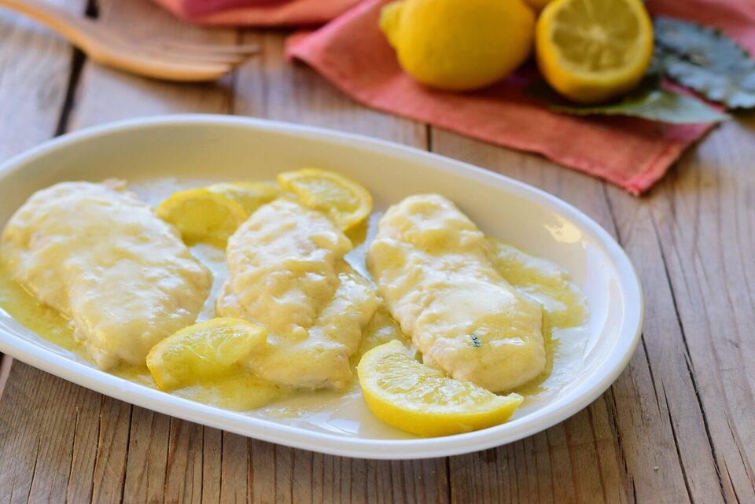

Lemon Chicken Breasts

Description
Easy to make, healthy and delicious! These lemon chicken breasts are the ideal choice for dinner. In a warm summer evening, the delicate flavour of the lemon will be refreshing! Let's check together how to make this amazing dish in less than 20 minutes!
Ingredients (for 4 servings)
- 650 g chicken breasts
- 60 g butter
- 60 g flour
- 2 lemons
- olive oil to taste
- salt and pepper to taste
Steps
- Pour the flour on a plate
- Coat the chicken breasts with the flour
- Heat a frying-pan and pour some olive oil on the pan
- Melt the butter on the pan
- When all the butter melted, cook the chicken breasts on the pan, flipping them from time to time
- Squeeze the lemons
- When the chicken is almost done (after about 4 minutes), pour the lemon juice on the pan
- Wait until the lemon juice gains a creamy consistency
- Serve the chicken, if you wish you can add thyme or rosemary on top